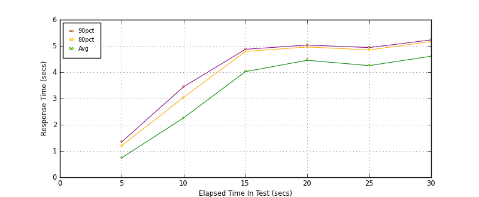
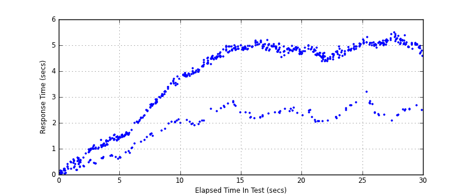
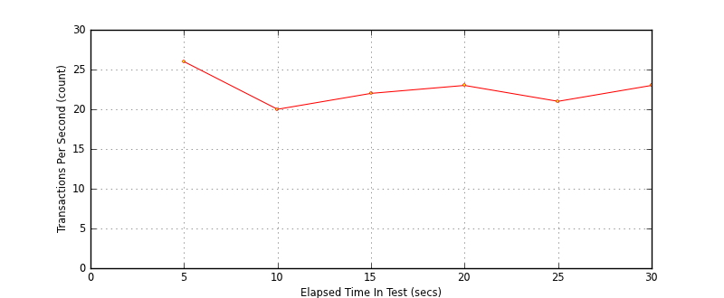
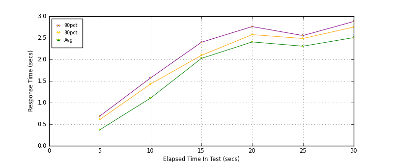
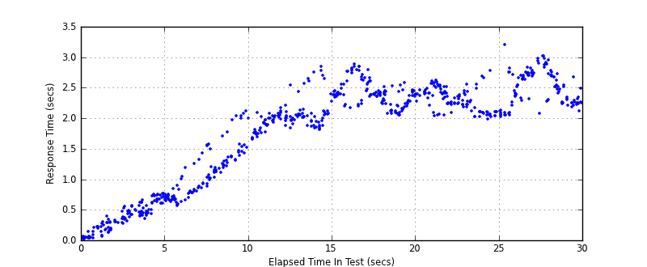
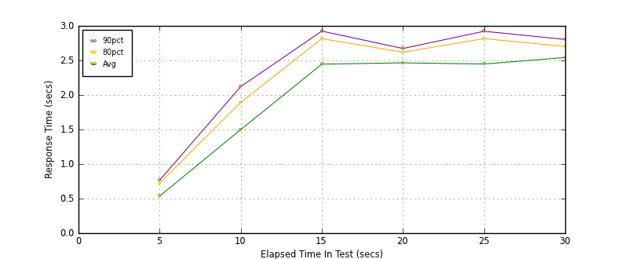
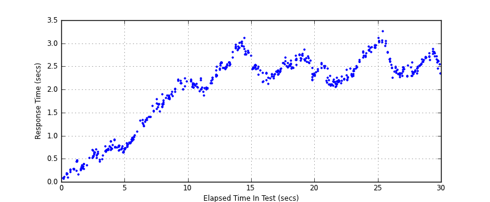
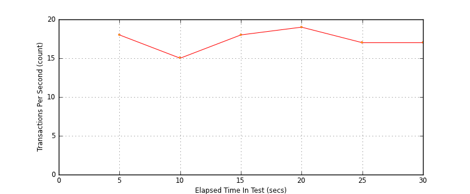

Performance Results Report
Summary
transactions: 783
errors: 0
run time: 30 secs
rampup: 10 secs
test start: 2014-01-28 15:44:47
test finish: 2014-01-28 15:45:17
time-series interval: 5 secs
workload configuration:
| group name | threads | script name |
|---|
| user_group-1 | 10 | read_user.py |
| user_group-2 | 90 | readwrite_user.py |
All Transactions
Transaction Response Summary (secs)
| count | min | avg | 80pct | 90pct | 95pct | max | stdev |
|---|
| 783 | 0.024 | 3.333 | 4.931 | 5.041 | 5.118 | 5.489 | 1.703 |
Interval Details (secs)
| interval | count | rate | min | avg | 80pct | 90pct | 95pct | max | stdev |
|---|
| 1 | 132 | 26.40 | 0.024 | 0.744 | 1.203 | 1.350 | 1.423 | 1.524 | 0.450 |
| 2 | 103 | 20.60 | 0.648 | 2.264 | 3.044 | 3.446 | 3.532 | 3.792 | 0.801 |
| 3 | 110 | 22.00 | 1.891 | 4.025 | 4.792 | 4.874 | 4.947 | 4.998 | 0.881 |
| 4 | 118 | 23.60 | 2.163 | 4.455 | 4.960 | 5.034 | 5.096 | 5.188 | 0.960 |
| 5 | 105 | 21.00 | 2.036 | 4.252 | 4.850 | 4.938 | 4.961 | 5.059 | 0.963 |
| 6 | 115 | 23.00 | 2.069 | 4.609 | 5.167 | 5.231 | 5.354 | 5.489 | 1.014 |
Graphs
Response Time: 5 sec time-series

Response Time: raw data (all points)

Throughput: 5 sec time-series

Custom Timer: get_tweets
Timer Summary (secs)
| count | min | avg | 80pct | 90pct | 95pct | max | stdev |
|---|
| 683 | 0.024 | 1.756 | 2.442 | 2.661 | 2.751 | 3.203 | 0.853 |
Interval Details (secs)
| interval | count | rate | min | avg | 80pct | 90pct | 95pct | max | stdev |
|---|
| 1 | 132 | 26.40 | 0.024 | 0.372 | 0.608 | 0.690 | 0.738 | 0.768 | 0.225 |
| 2 | 103 | 20.60 | 0.569 | 1.106 | 1.432 | 1.572 | 1.992 | 2.116 | 0.395 |
| 3 | 110 | 22.00 | 1.653 | 2.023 | 2.093 | 2.397 | 2.644 | 2.840 | 0.239 |
| 4 | 118 | 23.60 | 2.047 | 2.405 | 2.573 | 2.760 | 2.800 | 2.888 | 0.205 |
| 5 | 105 | 21.00 | 1.987 | 2.306 | 2.484 | 2.551 | 2.593 | 2.774 | 0.186 |
| 6 | 115 | 23.00 | 2.022 | 2.504 | 2.748 | 2.877 | 2.954 | 3.203 | 0.282 |
Graphs
Response Time: 5 sec time-series

Response Time: raw data (all points)

Throughput: 5 sec time-series
Custom Timer: post_tweet
Timer Summary (secs)
| count | min | avg | 80pct | 90pct | 95pct | max | stdev |
|---|
| 539 | 0.053 | 1.997 | 2.599 | 2.784 | 2.914 | 3.250 | 0.805 |
Interval Details (secs)
| interval | count | rate | min | avg | 80pct | 90pct | 95pct | max | stdev |
|---|
| 1 | 93 | 18.60 | 0.053 | 0.535 | 0.723 | 0.765 | 0.865 | 0.909 | 0.221 |
| 2 | 79 | 15.80 | 0.753 | 1.499 | 1.893 | 2.121 | 2.175 | 2.238 | 0.452 |
| 3 | 91 | 18.20 | 1.866 | 2.446 | 2.815 | 2.925 | 2.986 | 3.103 | 0.339 |
| 4 | 99 | 19.80 | 2.113 | 2.465 | 2.619 | 2.672 | 2.731 | 2.855 | 0.159 |
| 5 | 89 | 17.80 | 2.053 | 2.448 | 2.816 | 2.922 | 3.031 | 3.110 | 0.312 |
| 6 | 88 | 17.60 | 2.241 | 2.542 | 2.702 | 2.804 | 2.987 | 3.250 | 0.210 |
Graphs
Response Time: 5 sec time-series

Response Time: raw data (all points)

Throughput: 5 sec time-series
